[1, 2, 3]
[1, 3, 5]
[5, 4, 3, 2, 1, 0]
5The fundamental package for scientific computing with Python
conda install numpypip install numpyThe absolute basics for beginners is more than enough for this course.
ndarray. The concept of an axis is essential.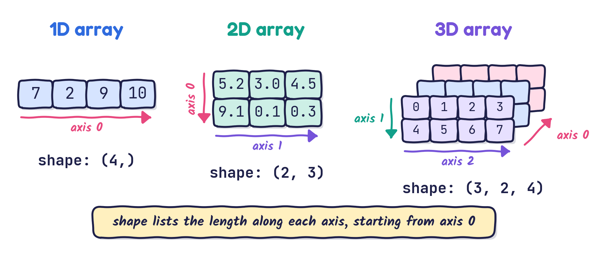
ndarray) versus heterogeneous data (list)We will answer all of these with NumPy by the end of the lecture.
ndarray versus lista[1, 2]True keeps an element, False drops it)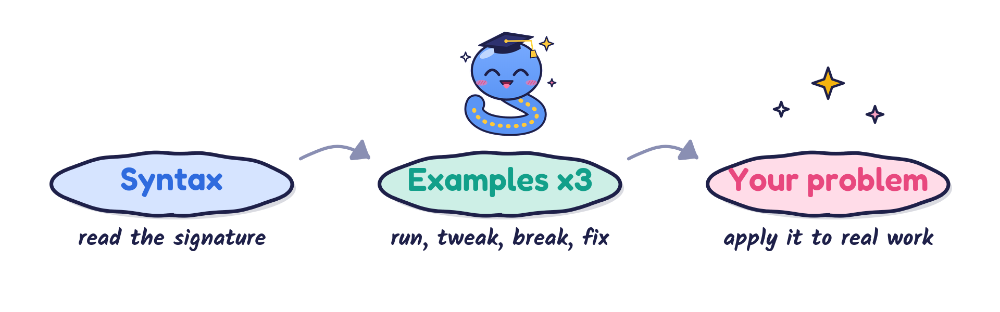
Learn the syntax, then examples, examples, examples, then practise on your own problem.
Search for “numpy array” or “create array in numpy” and you land here:
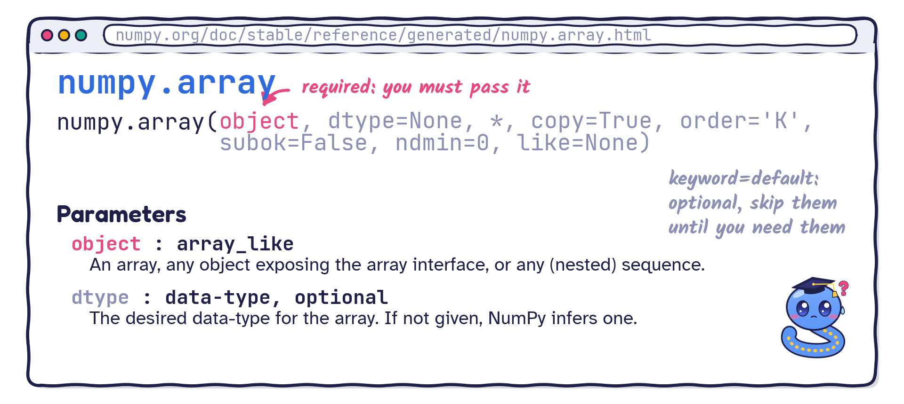
Scroll down to the examples, then run and modify them:
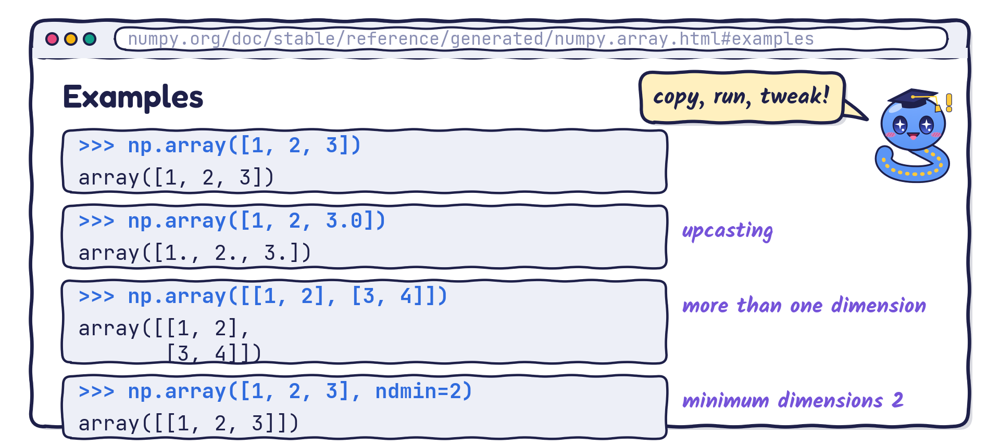
range, but the step can be a float)
- Arguments written
keyword=valuehave default values: you do not need to memorise them. Your editor suggests them when you need them.- You only need to remember the required arguments (the ones without a default).
- Recall the functions lecture: everything after
*must be passed by keyword.
a1 = [1 2 3]
a2 =
[[0. 0. 0.]
[0. 0. 0.]]
a3 =
[[1. 1. 1.]
[1. 1. 1.]]
a4 = [0.5 0.7 0.9 1.1 1.3]
a5 = [0.5 0.7 0.9 1.1 1.3 1.5]array([0.5, 0.7, 0.9, 1.1, 1.3, 1.5])Tip: with a float step, prefer linspace: you control exactly how many points you get.
ndarrayIndexing and slicing NumPy arrays versus Python lists: same same, but different.
Python list
[1, 2, 3]
[1, 3, 5]
[5, 4, 3, 2, 1, 0]
51
[0 1 2]
[[0 1 2]
[3 4 5]]
[[0 1 2]
[6 7 8]]
[0 3 6]
[[0 1]
[3 4]
[6 7]]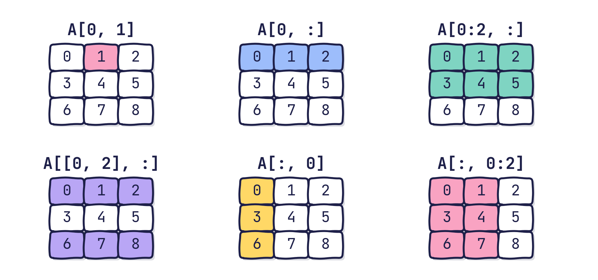
A comparison produces an array of True/False; using it as an index keeps only the True positions.
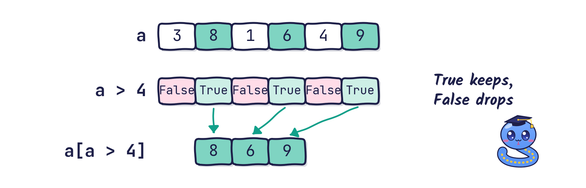
What does this print?
[0 3 6 9]: the mask is True wherever the remainder after dividing by 3 is zero.
ndarray object has many attributes (properties).Useful attributes:
ndarray.ndim: number of array dimensions (axes)ndarray.shape: tuple of array dimensionsndarray.size: number of elements (equals np.prod(a.shape), the product of the dimensions)ndarray.dtype: data type of the elements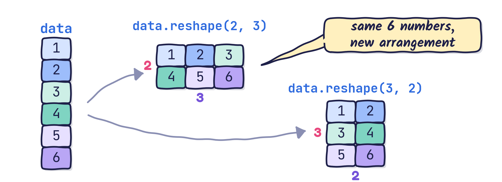
ndarray object:
ndarray.reshape(shape): give a new shape without changing the datandarray.ravel(): return a flattened (1D) array, sharing data when possiblendarray.flatten(): return a flattened copynp.reshape(a, shape), np.ravel(a)-1, meaning “work it out for me”.What to remember: NumPy reshape / ravel / flatten + the documentation.
What shapes are printed?
(3, 4) and (2, 6): with 12 elements, NumPy fills in the -1 so that the sizes multiply to 12.
Particularly useful in computations:
Syntax:
numpy.transpose(a, axes=None): returns a view of the array with its axes permuted. axes is an optional tuple or list of integers.ndarray.transpose(*axes): the same, as a method. a.T is a shortcut for the full transpose.(2, 2, 2)
[[[1 2]
[3 4]]
[[1 0]
[0 1]]][[[1 3]
[2 4]]
[[1 0]
[0 1]]]b, i.e. b.shape?c, i.e. c.shape?Arithmetic operators such as +, -, *, / act element by element:
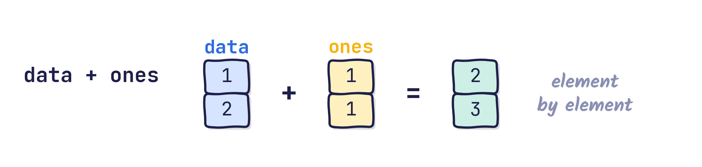
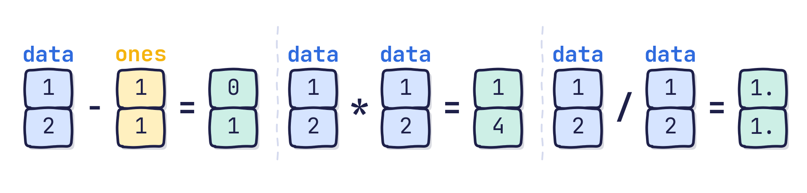
An operation between an array and a single number applies the number to every element:
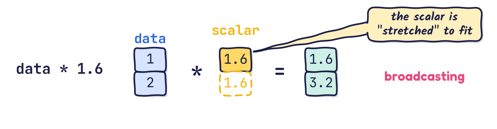
What does np.array([1, 2, 3]) * 2 + 1 give?
[3 5 7]: every element is doubled, then 1 is added to every element.
Element-by-element arithmetic works for \(n\)-dimensional arrays too:
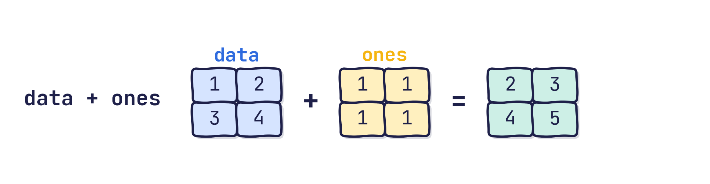
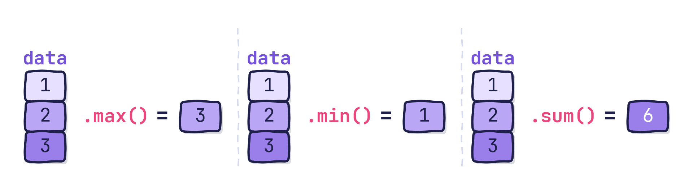
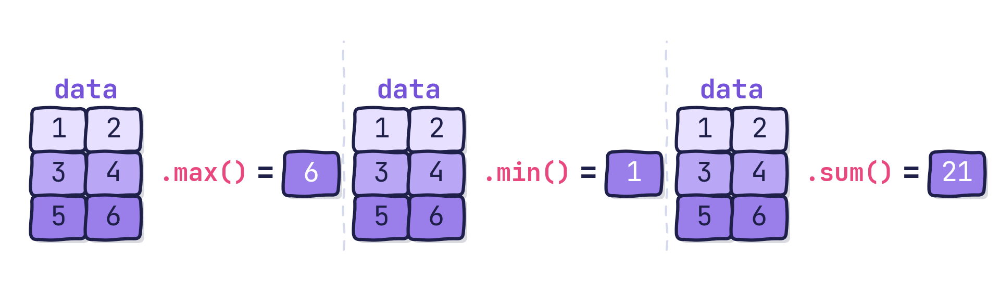
The same operations exist as NumPy functions: np.max(data), np.min(data), np.sum(data).
axis: an important concept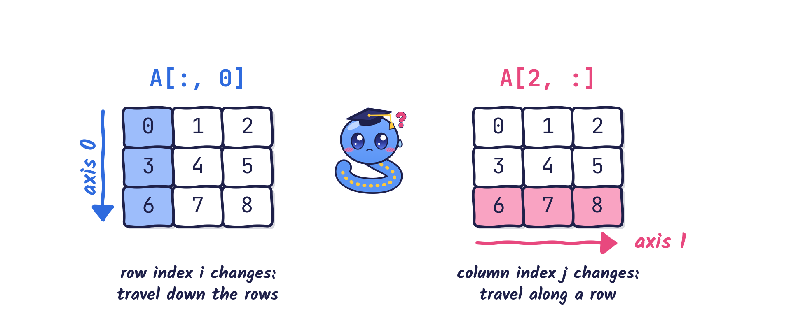
axis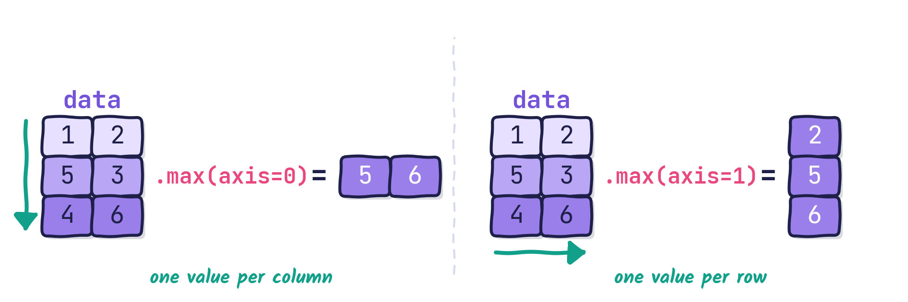
What to remember: ndarray.max() / .min() / .sum() + the documentation. What to understand: the axis keyword argument.
axis: a small challengeWhat are the results of A.sum(axis=0) and A.sum(axis=1)?
axis: the maths behind itFor \(\mathbf{A} = \begin{bmatrix} 0 & 1 & 2 & 3 \\ 4 & 5 & 6 & 7 \\ 8 & 9 & 10 & 11 \end{bmatrix}\), A.sum(axis=0) adds down each column (the row index changes):
\[ \sum\limits_{k=1}^{3}{A_{k \diamond}} = \begin{bmatrix} \underbrace{0 + 4 + 8}_{12} & \underbrace{1 + 5 + 9}_{15} & \underbrace{2 + 6 + 10}_{18} & \underbrace{3 + 7 + 11}_{21} \end{bmatrix} =\begin{bmatrix} 12 & 15 & 18 & 21 \end{bmatrix} \]
A.sum(axis=1) adds along each row (the column index changes):
\[ \sum\limits_{k=1}^{4}{A_{\diamond k}} = \begin{bmatrix} 0 + 1 + 2 + 3 \\ 4 + 5 + 6 + 7 \\ 8 + 9 + 10 + 11 \end{bmatrix} = \begin{bmatrix} 6 \\ 22 \\ 38 \end{bmatrix} \]
Objectives: the dot product of two vectors, and the product of two matrices. With Python lists, both are cumbersome:
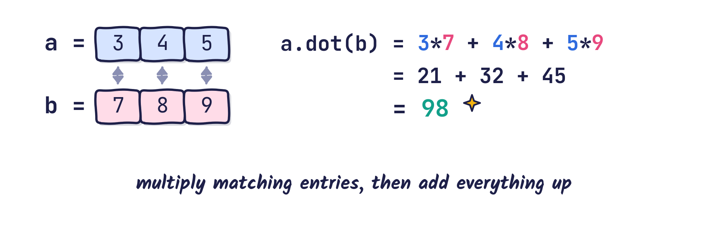
Official syntax: ndarray.dot(b) or numpy.dot(a, b)
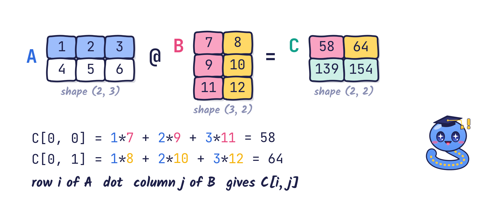
The last axis of \(\mathbf{A}\) is combined, by a dot product, with the second-to-last axis of \(\mathbf{B}\): \[ C_{ij} = \sum\limits_{k=1}^{N} A_{ik} B_{kj} = \texttt{A[i, :].dot(B[:, j])} \]
[[ 58. 64.]
[139. 154.]]In machine learning, error estimation and engineering, we often need the mean squared error:
\[ \mathrm{MSE} = \frac{1}{n}\sum\limits_{j=1}^{n}\big(y_{j}^\text{prediction} - y_{j}^{\text{label}} \big)^2 \]
ypred and ylabel.\[ \mathrm{MSE} = \frac{1}{n}\sum\limits_{j=1}^{n}\big(y_{j}^\text{prediction} - y_{j}^{\text{label}} \big)^2 \]
ypred - ylabel(ypred - ylabel) ** 2np.sum((ypred - ylabel) ** 2)1/n * np.sum((ypred - ylabel) ** 2)All in all, using np.square instead of ** 2:
for loop:1.6666666666666667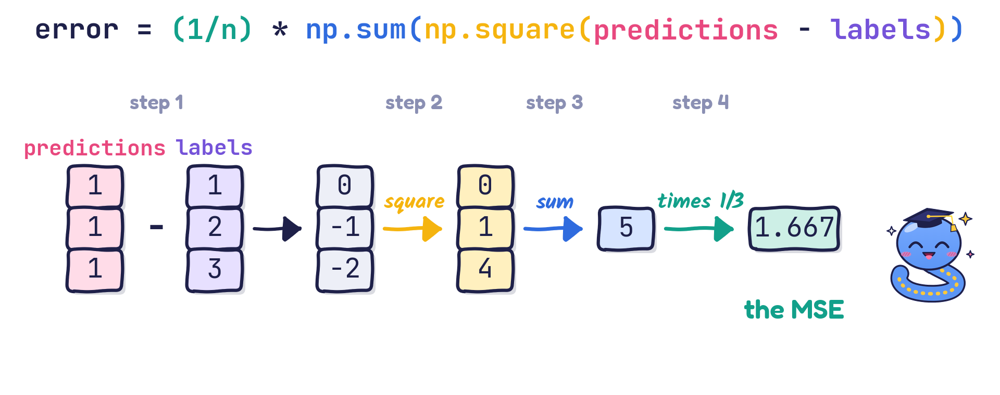
a, b = np.array([1, 2, 3]), np.array([4, 5, 6])
A, v = np.array([[1, 2], [3, 4]]), np.array([5, 6])
print("a . b =", a.dot(b), " A b =", A @ v)
q = 1 / np.arange(1, 101) # q_i = 1/i for i = 1..100
i = np.arange(1, 51)
sigma = q.sum()
gamma = np.sum(q[2 * i - 2] ** 2 / (2 * i + 1) ** 2) # q_{2i-1}: index 2i-2 from 0
print(f"sigma = {sigma:.4f}, gamma = {gamma:.4f}")
r = np.concatenate([np.arange(1, 11), np.arange(9, 2, -1)])
print("r =", r)
print("3 < r < 8:", r[(r > 3) & (r < 8)])a . b = 32 A b = [17 39]
sigma = 5.1874, gamma = 0.1169
r = [ 1 2 3 4 5 6 7 8 9 10 9 8 7 6 5 4 3]
3 < r < 8: [4 5 6 7 7 6 5 4]ndarray holds homogeneous data on a grid; shape gives its length along each axis.np.array, np.zeros, np.ones, np.arange, np.linspace; change their shape with reshape and transpose.sum, max, min, mean) work on the whole array or along an axis.a.dot(b) and A @ B do linear algebra; formulas such as the MSE become one line of code.